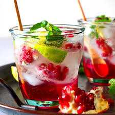

Pomegranate mocktail

Description
This beverage has a lovely deep red color, perfect for any celebration. The pomegranate juice brings a mellow sweetness,
and the lime's tanginess complements it perfectly. Top it all with some fun bubbly from the sparkling white grape juice,
and you've got a simple, crowd-pleasing punch that everyone can enjoy
Ingredients
- 6 basil leaves, plus more for garnish
- 1 fluid ounce lime juice
- 4 fluid ounces pomegranate juice
- 1 fluid ounce grapefruit lime flavor tepache soda (such as De La Calle® Tepache)
Procedure
- Place basil and lime juice into a cocktail shaker and mash well with a cocktail muddler.
- Pour in pomegranate juice; cover and shake well.
- Strain into a glass with ice, top off with tepache soda, and garnish with freshly torn basil leaves.
Index Page